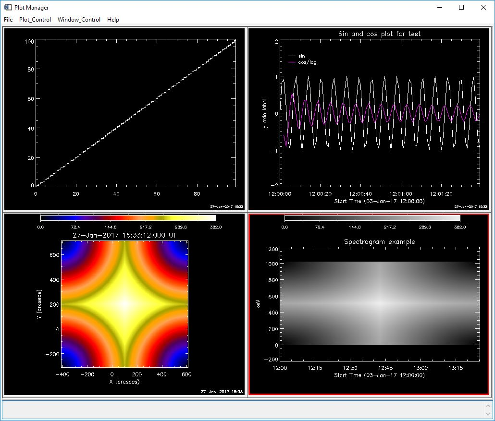

Some of the data objects you work with have built-in plotman methods. These include the RHESSI image, spectrum, lightcurve, and observing summary objects, as well as instrument data objects available through show_synop and vso_search such as sdo, aia, eit, euvi, trace, and many more. If you're not using an object with a built-in plotman method, you can insert your data into one of the generic objects that do have a plotman method: xyplot, utplot, map, and specplot objects.
You can check whether your object has a plotman method by typing (assuming o is your object)
print,have_method(o, 'plotman')
A result of 1 means you do have a plotman method. If so, you can call PLOTMAN from the command line by typing
o ->plotman
o->plotman, desc='Name for plot' ; assigns name to plot panel in PLOTMAN
o->plotman, plotman_obj=pobj ; returns PLOTMAN object reference, or if pobj exists, adds new plot to that PLOTMAN instance
If you have a simple data array (image,
spectrum, time profile, etc.) rather than an object with a plotman method,
the best way to use PLOTMAN is to insert the data into one of these
generic plot objects: xyplot , utplot, specplot, or map, and then use that
object as input to PLOTMAN. These object classes are in the gen part
of $SSW - please see the header documentation in the .pro files for more
information about how to call them. These object classes are
integrated well with PLOTMAN - you can set a variety of parameters
describing your data into the generic plot object, and PLOTMAN will
recognize them. (You can also put the data arrays directly into
PLOTMAN without using the intermediate object, but there is less
flexibility, so that is not discussed here.)
These are the data types and corresponding plot objects that have plotman methods:
| DATA |
OBJECT CLASS |
OBJECT CREATION |
| x, y arrays x can be dimensioned [nx], [2,nx], [nx,ny], [2,nx,ny] where 2 is for low/high edges y can be dimensioned [nx] or [nx,ny] nx and ny for x and y arrays must match error (optional) should be dimensioned the same as y |
xyplot | o = obj_new('xyplot', x, y) or o = obj_new('xyplot', x, y, error) |
| time, y arrays same options as for x,y arrays time array can be any anytim format if time is simple array, it is interpreted as seconds since 1979/1/1, unless you provide a utbase |
utplot | o = obj_new('utplot',
x, y) or o = obj_new('utplot', x, y, error) or o = obj_new('utplot, x, y, utbase=utbase) |
| image array first make a map structure from image data |
map | o = obj_new('map') o->set, map=map_struct |
| time, y spectrogram time dimensioned [nx] y dimensioned [nx, ny] dim1_vals dimensioned [ny] (y axis values) if time is simple array, it is interpreted as seconds since 1979/1/1, unless you provide a utbase |
specplot | o = obj_new('specplot', x, y,
dim1_vals=dim1_vals) or o = obj_new('specplot', x, y, dim1_vals=dim1_val, utbase=utbase) |
Example: Running the following code will put an xyplot, utplot, image, and spectrogram into the same PLOTMAN instance.
x = findgen(100) & y = findgen(100)
xy = obj_new('xyplot',x,y)
xy->plotman, plotman_obj=pobj, desc='XYPLOT example't = dindgen(100) & y = [[sin(x)],[cos(x)/alog(x)]] ; now y has two 'channels'
ut = obj_new('utplot', t, y, utbase='3-jan-2017 12:00')
ut->set, id='Sin and cos plot for test', data_unit='y axis label', dim1_ids=['sin', 'cos/log'] ;adds labeling information
ut->plotman, plotman_obj=pobj, desc='UTPLOT example', psym=0, yrange=[-2,2]image = dist(512)
map_struct = make_map(image, xc=100, yc=200, dx=2, dy=2)
omap = obj_new('map')
omap->setmap, map=map_struct
omap->plotman, plotman_obj=pobj, description='MAP example'spec = dist(512)
t=dindgen(512)*10.
dim1_vals=findgen(512)*2.
sobj=obj_new('specplot', t,spec,dim1_vals=dim1_vals, utbase='3-jan-2017 12:00')
sobj->set, data_unit='keV', title='Spectrogram example'
sobj->plotman, plotman_obj=pobj, desc='SPECPLOT example'
The commands above should put four panels into one PLOTMAN instance. If you click Window_Control / Show All Panels you should see a display that looks like this:

(Your image colors may be different from the example above because your plotman defaults may be different, see below).
More information about making map structures is here, and information about using map objects is here.
On the call to PLOTMAN , you can include many of the keywords that apply to the IDL plot command.
Once your plots are in PLOTMAN, you can use Plot_Control to change options and Window_Control to select panels.
To select default options such as color, use the File / Set Plot Preferences... button. Use Window_Control / Multi_panel Options for options that operate on multiple existing panels (such as changing display settings on existing panels, e.g. change all selected plots to linear scaling).
Each time you call o->plotman, a new plotman instance is created unless you use the plotman_obj keyword to pass in an existing plotman reference. If multiple plots are sent to the same plotman instance, each new plot is saved as a separate panel (except see below).
If you add a new panel with the same description (panel name) as a panel already in that plotman session, the default is to not add the panel, but to show the existing panel (the assumption is that if the description is the same, the panel is the same, and we want to limit unnecessary panels). To force PLOTMAN to make a new panel, you can do one of the following: